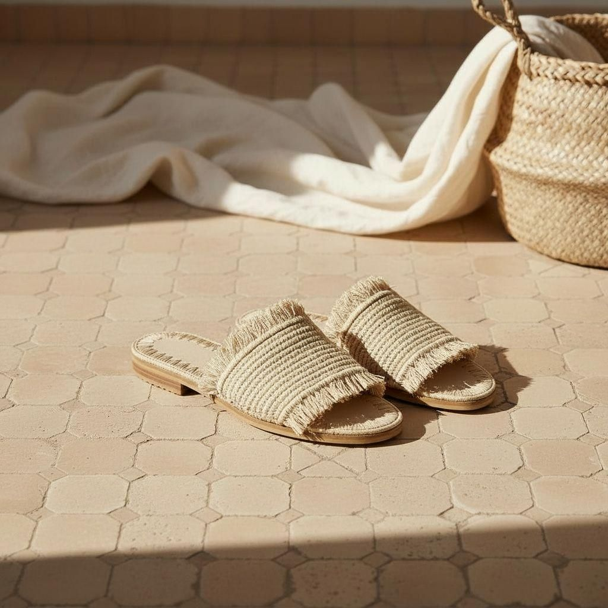

Rafia Natural
Tejido a mano. Suela de esparto.
El gesto más simple.
Un objeto que nace del
calor mediterráneo,
la artesanía slow
y el deseo de permanencia.

Primera colección — Verano eterno
Tejido a mano. Suela de esparto.
El gesto más simple.
Movimiento suave. Textura viva.
Para caminar despacio.
La misma mulanya,
otro momento del día.
Mulenyas nace de un verano detenido,
de la obsesión por un objeto bien hecho,
y de la certeza de que lo artesanal
no es nostalgia, es futuro.
Una mulanya es un gesto.
Un paso descalzo sobre esparto.
La costura lenta.
El calor que deja marca.
No fabricamos producto.
Creamos objetos con memoria:
rafia que respira,
yute que envejece bien,
flecos que se mueven como el Mediterráneo.
Cada pieza es una conversación
entre lo que permanece
y lo que se transforma.
Tejido a mano
Rafia, yute, esparto
Producción lenta
Trabajamos con artesanos que conocen
el ritmo del material,
no el del mercado.